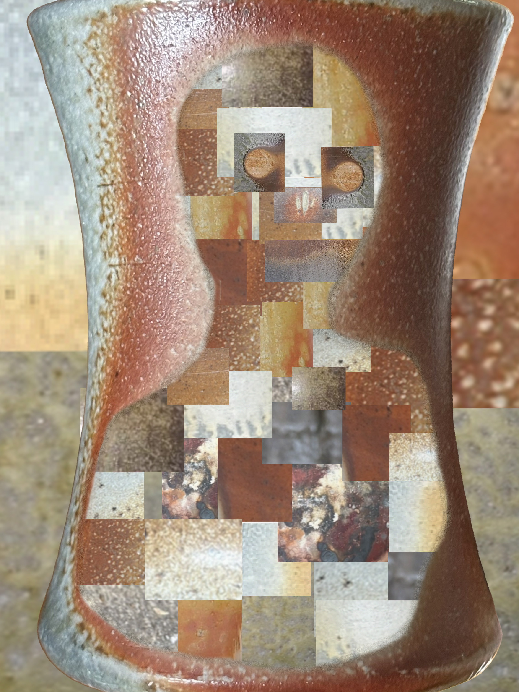

For this digital identity project, I chose to explore how identity can be anonymized and constructed from different pieces. I used a photograph of one of my coffee cups as the foundation and digitally cropped, copied and layered sections of the image into part of the mug to resemble an abstracted human figure. I used screenshots of photos of pots I have made to reveal textures, colors, and details that come from the nature of firing pottery in atmospheric kilns. Repeating and rearranging these pieces creates a fragmented version of the original object, suggesting that identity can be made up of different experiences and parts. This work functions as an exploration of digital identity because the image is edited and reconstructed, which goes beyond documenting the original artwork. The digital identity creates a new identity from what already exists.